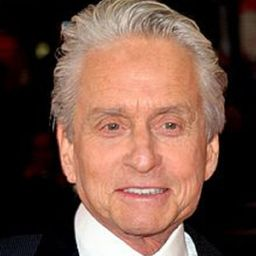
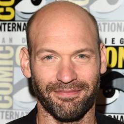

PERSONAJES
Paul Rudd
SCOTT LANG/ANT-MAN

Scott Edward Harris Lang es un antiguo criminal profesional que, tras ser liberado de prisión al terminar su condena por asaltar la mansión de su antiguo jefe de Vistacorp, fue reclutado por Henry Pym para asumir el manto de Ant-Man.Lang luchó contra el antiguo protegido de Pym, Darren Cross, quien había recreado las Partículas Pym y tenía la intención de vender la tecnología a organizaciones terroristas como HYDRA y los Diez Anillos
Michael Douglas
HENRY PYM
{kind=link}
El Doctor Henry Jonathan "Hank" Pym es un entomólogo y físico que desarrolló el Traje de Ant-Man después de crear las Partículas Pym. Durante un tiempo, él trabajó para S.H.I.E.L.D. como consultor y se convirtió en el primer Ant-Man, luchando junto a su esposa, Janet van Dyne, en varias misiones, incluida la persecución a Elihas Starr
Evangeline Lilly
Hope van Dyne
{kind=link}
Hope van Dyne es la hija de Henry Pym y Janet van Dyne, que también fue miembro de la junta directiva de Pym Technologies.Cuando el Director General de Pym Technologies, Darren Cross, intentó crear y vender una nueva arma basada en el Traje de Ant-Man de su padre a organizaciones terroristas como HYDRA y los Diez Anillos, van Dyne se reunió con Pym y un ladrón llamado Scott Lang, quien asumió el manto de Ant-Man, con el objetivo de vencer a Cross.
Corey Stoll
Yellowjacket
{kind=link}
El Doctor Darren Cross fue el protegido de Henry Pym, que usurpó a su mentor como Director General de Pym Technologies y renombró la compañía como Cross Technologies. Su obsesión hacia la antigua creación de Pym, las Partículas Pym, lo llevó a recrear la fórmula de la sustancia para vendérsela a organizaciones terroristas como HYDRA y los Diez Anillos